在Keynote使用运动效果和超链接
使用Keynote制作更好的教学用演示文稿——吸引学生注意力的运动效果，更有逻辑的超链接。
请点击右侧的 “HELP” 链接参考本教程的使用帮助。
Table of Contents
1 本教程适用对象
这篇教程主要是帮助指导中小学教师如何更好地使用Keynote软件来帮助其制作教学用幻灯片。
2 你将从本教程中学到什么
在这篇教程中，我们首先谈一下演示文稿的设计以及风格方面的问题，然后我们将重点介绍在Keynote中如何为演示文稿中添加运动效果，接着将介绍演示文稿中超链接的使用，最后本文将简单总结课堂教学中演示文稿的使用要点以及一些相关技巧的运用。
3 设计和风格
不同于商业或者其它类型的展示，课堂教学用演示文稿应当有其自身的特点。教师在自己的教学过程当中也应该结合自己的学科特点以及教学内容形成自己独特的演示文稿设计风格。有很多老师在平时的演示文稿制作过程中，只是简单地借鉴网上或者他人做好的幻灯片成品，加以修改和调整，就用在自己的教学当中，一段时间下来，其心思和精力主要花在演示文稿的相关功能上面，而忽略了本来应该放在首要地位的教学内容安排和教学设计，导致其做出的演示文稿风格不一，混杂了很多多余的元素，而且由于缺乏对演示文稿内容结构的梳理，缺少对于教学内容进行合理的排版，导致学生注意力难以集中，听课效果不佳。
那么到底什么样的演示文稿才符合课堂教学使用呢？根据我自己多年的体会，现在总结以下几点：
- 内容为主，简洁、直观，去除没有必要的、只为单纯追求华丽的一些效果。
- 内容设计应该有组织有结构，并且这种组织结构对于学生来说要简单、清晰。
- 要形成自己的演示文稿风格。
- 演示文稿要能吸引学生的注意力，而且紧紧围绕课堂教学内容展开。
4 在幻灯片中使用运动效果
幻灯片过渡和对象构件可以为你的幻灯片显示创建视觉效果，并强调你的观点。Keynote提供多种功能强大和新颖的过渡和构件效果，以帮助你创建动态的演示文稿。
创建和整理灯片后，你可以添加在幻灯片之间播放的动画效果并可以在幻灯片上移动对象。可用于幻灯片显示的动画有三种基本类型：
- 从一个幻灯片移到下一个幻灯片时，过渡可提供视觉效果。
- 对象构件（或构件效果）将对象移到幻灯片上和移出幻灯片（对象出现和消失）。
- 对象操作通过使幻灯片内的对象移动、旋转、更改大小或更改不透明度，使对象产生动画效果。
4.1 在幻灯片之间添加过渡
你可以指定幻灯片过渡播放的速度。请在幻灯片检查器中的“过渡”面板设置幻灯片过渡。
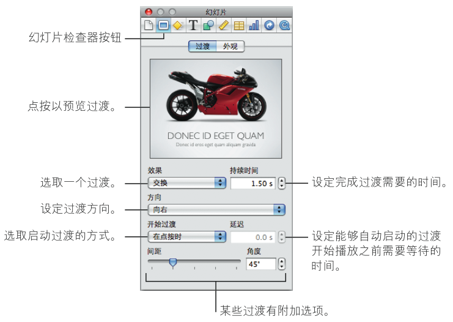
若要在选定的幻灯片后面添加过渡效果：
- 在工具栏中点按检查器，然后点按幻灯片检查器按钮。点按“过渡”。
- 从“效果”弹出式菜单中选取一个选项（在弹出式菜单中，过渡按照类型分组），如下所述。
如果你看到“不能在这台电脑上播放的效果”，则这些过渡要求你的电脑配备高级图形卡。
部分过渡样式与特定类型内容配合时效果最佳。这些“内容识别”的过渡基于幻灯片上的图像或文本来创建效果。在以下描述的过渡中，前三组属于内容识别的过渡。
- 神奇移动： 移动同时出现于当前幻灯片和下面幻灯片上的图形和文本，并调整其大小。在过渡过程中，对象被移到下面幻灯片上的新位置，并且大小有所改变。该过渡仅适用于不同位置的相同图像、形状或文本框，或者下一张幻灯片上大小不同的相同图像、形状或文本框。
- 文本效果： 当一个幻灯片上的文本过渡到下面幻灯片上的文本时，移动该幻灯片上的个别字母。当两张幻灯片之间的过渡包含突出文本时，最好使用文本效果。文本效果的一个示例为字母颠倒组合过渡。
- 对象效果： 将图形移到幻灯片或移出幻灯片时，将一次性移动幻灯片上的所有图形。当两个幻灯片包含突出图形时，最好使用对象效果。
- 三维效果： 创造三维视觉效果，当一个幻灯片移出屏幕时，下一个幻灯片移到屏幕中。这些效果不取决于幻灯片的内容，但需要高级图形卡以流畅地播放。
- 二维效果： 创造二维视觉效果，当一个幻灯片移出屏幕时，下一个幻灯片移到屏幕中。最近使用过的效果：保留你最后用过的五个过渡的列表，使你在添加新幻灯片时能够更加轻松地再次选择效果。
你可以在“检查器”当中尝试这些效果.
- 若要在检查器窗口中预览过渡，请在“过渡”面板中点按缩略图。
或者在工具栏中点按“播放”以观看全屏动画。
- 若要更改完成过渡所需的时间，请在“持续时间”栏中键入一个值（或点按箭头）。
- 从“方向”弹出式菜单中选取一个选项（不是所有效果都适用）。
- 从“开始过渡”弹出式菜单中选取一个选项。
如果你想要仅在点按进到下一个幻灯片后启动过渡，请选取“在点按时”。 如果你想要在当前幻灯片已经显示了一段固定时间后自动开始过渡，请选取“自动”。在“延迟”栏中，先指定当前幻灯片上停留的时间，然后才开始过渡到下一个幻灯片。
- 如果你选取了带有附加选项的效果（例如“马赛克”、“交换”或“淡入淡出颜色”），请选择你想要的设置。
当你播放幻灯片显示时，如果你的“立方体”或“翻转”过渡有被裁剪的现象：如果在Keynote偏好设置的“幻灯片显示”面板中选择了“放大幻灯片以适合显示器”，则“立方体”和“翻转” 过渡可能不可见。若要确保这些过渡在幻灯片显示过程中不会被剪裁，请取消选择“放大幻灯片以 适合显示器”，或者在“幻灯片显示”偏好设置面板中选择“减少过渡以避免剪裁”选项的其中一 个或两个。（选取 Keynote > “偏好设置” ，然后点按 “幻灯片显示” 。）
4.1.1 创建 “神奇移动” 过渡的技巧
“神奇移动”不适用于表格、图表或影片。
为使“神奇移动”过渡获得最佳效果，请复制幻灯片并在原始幻灯片和复制的幻灯片之间应用“神奇移动”过渡。
若要设置“神奇移动”过渡：
- 创建幻灯片并将对象（文本、形状、图像）放置于你想要的位置上。
- 在幻灯片导航器中选择幻灯片，然后按下 Command-D 以复制幻灯片。
- 在幻灯片副本上，请对幻灯片上的部分或所有文本、形状和图像进行重新放置和调整大小。
- 将你想要添加的任何附加文本或图形到已拷贝的幻灯片上，并删除你不想要在该幻灯片上显示的任何对象。
- 选择两个幻灯片中的第一个，然后应用“神奇移动”过渡。
4.1.2 使用文本效果创建过渡的技巧
文本效果过渡包括 字母颠倒组合 、 闪亮 、 闪烁 和 摇摆 。为使文本效果过渡获得最佳效果，请使用连续的两张幻灯片，其中包含简单的带有一些相同字母的突出文本。使两张幻灯片上的文本具有相同的字体和大小。对于字母颠倒组合和摇摆过渡，请确定文本在两张幻灯片上的位置相同。
若要使用文本效果设置过渡：
- 创建包含简单突出文本（例如，标题或简短声明）的幻灯片。
- 在幻灯片导航器中选择幻灯片，然后按下 Command-D 以复制幻灯片。
- 在幻灯片的副本上，删除现有的文本并键入你想要出现在幻灯片上的文本。确定新文本要简单，并且至少含有一些与第一张幻灯片相同的字母。
- 选择两个幻灯片中的第一个，然后应用你喜欢的文本效果过渡。
4.1.3 使用对象效果创建过渡的技巧
对象效果过渡包括 对象推送 、 对象缩放 、 透视 和 旋转 。为了使对象效果过渡获得最佳效果，请使用连续的两个幻灯片，其中包含数个突出图像或其他大图形。
若要使用对象效果设置过渡：
- 创建一张包含数个醒目图形（例如，照片或大标志）的幻灯片。
- 在紧随第一张幻灯片之后创建第二张幻灯片，而且该幻灯片也包含数个醒目图形。
- 选择两张幻灯片中的第一张，然后应用你喜欢的对象效果过渡。
4.2 使用对象构件使幻灯片产生动画效果
你可以使用对象构件使幻灯片上的个别或一组元素产生动画效果：
- 构件出现效果使元素出现或移到幻灯片上，而构件消失效果使元素消失或移出幻灯片。
- 动作构件可使幻灯片内的元素产生动画效果。
- 智能构件是用于使幻灯片中的图像产生动画效果的预定义动作构件。
你可以在一个幻灯片上创建多个对象构件，你还可以将多个构件应用于同一对象。
例如，你可以使带项目符号的文本逐行出现。或者你可以一次显示图表的个别部分以集中观众的注意或制造悬念。你可以使图像从左侧移到幻灯片上，然后再从右侧移出幻灯片。当你设置构件后，你可以更改它们的顺序。
4.2.1 使用构件将对象移到幻灯片上或移出幻灯片
若要将元素移到幻灯片上或移出幻灯片，你可以从完整的幻灯片开始（所有的元素都可看见），然后为每个要出现或消失的元素定义一个构件。
若要使对象自动移到幻灯片上或移出幻灯片：
- 在幻灯片上，选择要移到幻灯片上或移出幻灯片的对象。
按住 Shift 键点按以选择多个对象。
- 在工具栏中点按“检查器”，然后点按构件检查器按钮。
- 若要使对象移到幻灯片上，请点按“构件出现”。若要使对象离开幻灯片，请点按“构件消失”。
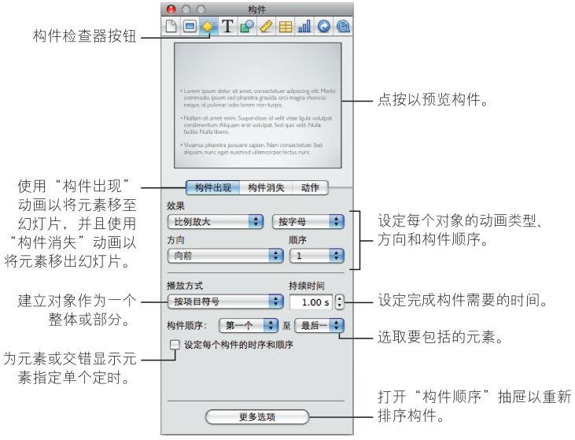
- 从“效果”弹出式菜单中选取一个选项。
如果你使用智能构件来应用效果，则你将在“效果”菜单中看到“使用智能构件”选项。有关更多信息，请参阅在单个幻灯片上构建一系列图像（智能构件）。
- 若要更改对象进入或离开幻灯片的方向，请从“方向”弹出式菜单中选取一个选项。（并非所有效果均提供此选项。）
- 若要更改对象是一次全部出现还是逐个出现在幻灯片上，请从“播放方式”弹出式菜单中选取一个选项。
“播放方式”弹出式菜单中的选项根据选定的对象而更改。例如，适用于表格的选项包括按行或按列构建；适用于文本的选项包括按段落构建。
- 若要设定对象（或对象元素）出现或消失所需的持续时间，请在“持续时间”栏中键入一个值（或点按箭头）。
若要了解如何设定各自的时序、如何更改构件顺序或者如何使单个元素的构件产生动画效果的信息，请选择“设定每个构件的时序和顺序”。在“构件顺序”抽屉中，选择每个元素并参阅以下主题：
- 若要更改构件出现的顺序，请参阅将对象构件重新排序。
- 若要指定是自动开始该构件（在指定时间后）还是在点按时开始，请参阅使对象构件自动化。
- 若要分散不同对象元素（例如，表格的行和饼图的扇区）的构件，请参阅混合文本、表格和图表的构件。
- 若要应用动作构件以移动或修改幻灯片上的对象，请参阅关于在幻灯片（动作构件）上使对象产生动画效果中的主题。
- 若要防止构建某些对象元素，请从“构件顺序”弹出式菜单中选取除“第一个”和“最后一个”之外的选项。
若要查看构件，请在构件检查器中点按该图像或在工具栏中点按“播放”。你还可以通过在“构件顺序”抽屉中点按单个元素的构件来进行查看。
如果你将定义了构件的对象成组或者取消成组，则构件效果会被移除。
你可以在母版幻灯片上创建对象构件，这样构件效果就可以出现在使用该母版幻灯片创建的每张幻灯片上。
4.2.2 关于在幻灯片（动作构件）上使对象产生动画效果
动作构件是允许你移动或更改对象外观但又无需把对象移到幻灯片上或移出幻灯片的幻灯片构件。 有两大类动作：
- 沿着你指定的路径在幻灯片中移动对象
- 通过使对象增长或收缩、更改透明度或旋转来更改对象的外观
你可以在母版幻灯片上创建一个动作构件，这样构件效果就可以出现在使用该母版幻灯片创建的每张幻灯片上。
4.2.2.1 在幻灯片上移动对象
动作构件可以在幻灯片中使对象沿着直线或曲线路径移动。如果你想要对象在行进过程中暂停在某个点上，你可以指定多个路径分段，每个路径分段均为一个单独的构件。点按以使对象沿着下一个 路径分段前进，或者为每个路径分段设定自动定时。（若要了解构件的自动定时，请参阅使对象构件自动化。）
若要给对象指定行进路径：
- 在工具栏中点按“检查器”，并点按构件检查器按钮。
- 点按“动作”。
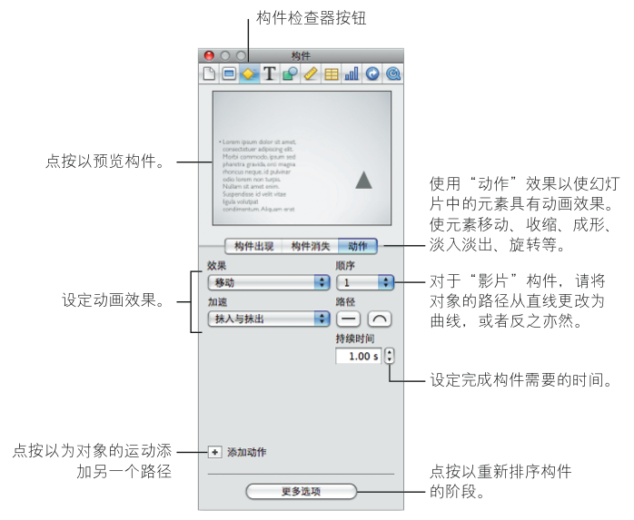
- 在幻灯片中，选择对象（图像、形状、文本框、图表、影片或其他媒体文件，或者表格）。
- 从“效果”弹出式菜单中选取“移动”。
在幻灯片画布上，此时将显示一条连接到“幻影”（透明）版本的对象的红线，显示对象的目的位置。
- 若要修改路径，请执行以下任一操作：
- 通过将幻影对象拖到下一位置来更改对象移动的方向或距离。
- 通过在构件检查器中点按“弯曲路径”按钮来将路径从直线更改为曲线。
- 通过拖移路径的一个节点或节点控制柄（连按节点以使控制柄出现）重新塑造路径的弯曲程度。如 果要获得更多控制，请点按节点（路径上的一个点）然后拖移其控制柄。
- 通过在点按路径（当鼠标指针看起来象笔尖时）的同时按住 Option 键，将节点（点）添加到路径 中。然后，你便可以通过拖移路径的节点或节点控制柄之一来重新塑造路径的弯曲程度。
- 通过从构件检查器中的“加速”弹出式菜单中选取一个选项来控制对象的加速。
- 通过沿着路径拖移来移动整个路径分段（连同起点和终点）。
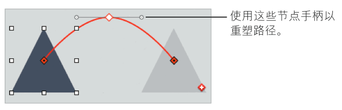
- 若要沿着新路径分段移动对象，请在幻影对象上点按“添加路径”按钮（中间带有白色加号（+）的 红色正方形）或在构件检查器中点按“添加动作”按钮。
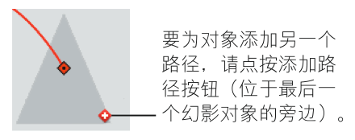
- 若要将动作构件的阶段重新排序，请点按“更多选项”（如果构件抽屉尚未打开）并在“构件顺 序”抽屉中拖移构件。（有关更多信息，请参阅将对象构件重新排序。）
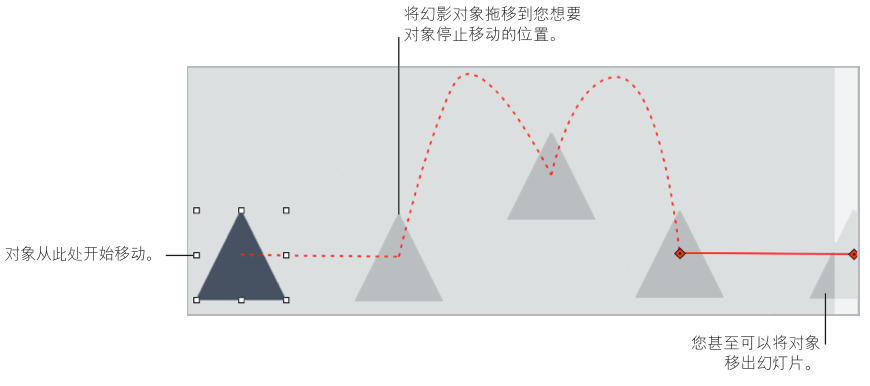
取消选择某一对象及其所有路径之后，路径在幻灯片画布中不再显示。通过点按该对象上的“显示 路径”按钮（外观是中间带一个黑点的小红钻石），你就可以再次看到它们。如果在点按“显示路 径”按钮时按住 Option 键，幻影将会一直可见，直到你再次点按“显示路径”按钮为止。
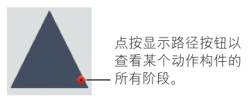
4.2.2.2 使对象淡入淡出、旋转、增长或收缩
使用动作构件使对象旋转，改变不透明度（透明度）或大小。
若要使对象改变大小、方向或不透明度：
- 在工具栏中点按“检查器”，并点按构件检查器按钮。
- 点按“动作”。
- 在幻灯片中，选择对象（图像、形状、文本框、图表、影片或其他媒体文件，或者表格）。
- 从“效果”弹出式菜单中选取一个选项，然后指定变形后对象的外观：
- 若要使对象淡入淡出（或强化淡入淡出的对象），请从“效果”弹出式菜单中选取“不透明度”，然后使用不透明度滑块或栏以设定对象的最终不透明度。在弹出式菜单中选取加速样式，然后在栏中设定持续时间；持续时间越短意味着对象的不透明度变化得越快。
- 若要旋转对象，请从“效果”弹出式菜单中选取“旋转”，然后从弹出式菜单中选取“方向”。在“旋转”栏中设定角度以指定你想要对象转动的角度。在弹出式菜单中选取加速样 式，然后在栏内设定持续时间；持续时间越短意味着对象旋转得越快。
通过将角度设定为360°，你可以使对象旋转一周。将角度设定为360°的倍数，将使对象旋转几周。
- 若要使对象收缩或扩展，请从“效果”弹出式菜单中选取“缩放”，然后使用缩放滑块或缩放栏来设定对象的最终大小（多达200%）。在弹出式菜单中选取加速样式，然后在栏内设定持 续时间；持续时间越短意味着对象的大小改变越快。
若要使对象在幻灯片中移动时调整大小或旋转：
- 在工具栏中点按“检查器”，并点按构件检查器按钮。
- 点按“动作”。
- 在幻灯片中，选择对象（图像、形状、文本框、图表、影片或其他媒体文件，或者表格）。
- 从“效果”弹出式菜单中选取“移动”。
在幻灯片画布上，此时将显示一条连接到“幻影”（透明）版本的对象的红线，显示对象的目的位置。
- 将幻影对象拖到幻灯片画布上的目的位置。
- 执行以下任一或两项操作：
- 若要使对象收缩或扩展，请通过拖移幻影对象的选择控制柄来调整其大小（与处理普通对象大小相同）。幻影对象的新大小应代表你想要对象所拥有的最终大小。
- 若要旋转对象，请在对象边界框一角之上按住鼠标指针的同时按住 Command 键。鼠标指针变 为弯曲的箭头时，请拖移边界框的角以旋转对象（与处理普通对象大小相同）。幻影对象的新 位置应是你想要对象所处的最终方向。
- 如果你想要对象继续沿着新路径分段运动，请点按“添加路径”按钮并指定路径。
4.2.3 在单个幻灯片上构建一系列图像（智能构件）
Keynote 提供了在单个幻灯片上构建一系列照片或其他图像的简单方法，其中照片或其他图像之 间均带有动画过渡。这些构件效果被称为 “智能构件” 。使用默认速度、构件方向和每个构件效果 均已定义的其他属性，你将可以轻松设置智能构件。但是如果你愿意，你也可以自定细节。
由于智能构件包含在右下角带有紫色小钻石的蓝色框中，所以可以轻易将它识别出来。
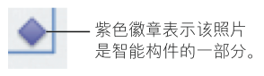
若要设置智能构件：
- 选取“插入”>“智能构件”>“构件效果”。
- 将图像从媒体浏览器（如果尚未打开，请在工具栏中点按“媒体”）的“照片”面板拖到幻灯片画布的拖放区（带虚线外框的蓝色正方形），或者拖到智能构件编辑器中。
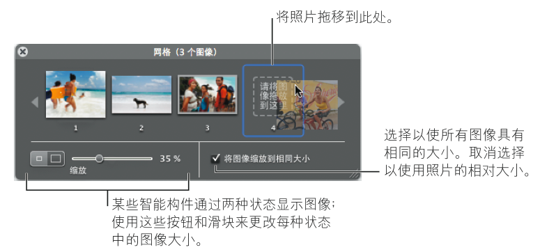
你还可以拖移Finder中的照片和其他图像文件。
- 使用智能构件编辑器以通过以下任意一种方式来修改智能构件：
- 若要交换两个图像的位置，请在智能构件编辑器中将一个图像拖到另一个图像之上。
- 若要将图像移出构件，请将它拖移出智能构件编辑器，或者选择该图像并按下 Delete。
- 若要将所有照片设定为相同大小，请选择“将图像缩放到相同大小”。
- 若要使用照片的相对大小，请取消选择“将图像缩放到相同大小”。
- 某些智能构件会显示图像的两个状态。使用大小按钮和缩放滑块指定每种状态下的图像大小。
- 若要在幻灯片画布上使具有最大大小的图像变得更大或更小，请拖移蓝色智能构件框的控制柄。
若要修改构件的速度、方向、对齐方式或其他属性：
- 选择智能构件，然后在工具栏中点按“检查器”按钮。
- 在检查器中点按构件检查器按钮，然后点按“动作”。
由于不同构件样式具有不同属性，所以你看到的选项取决于你选择的构件效果。
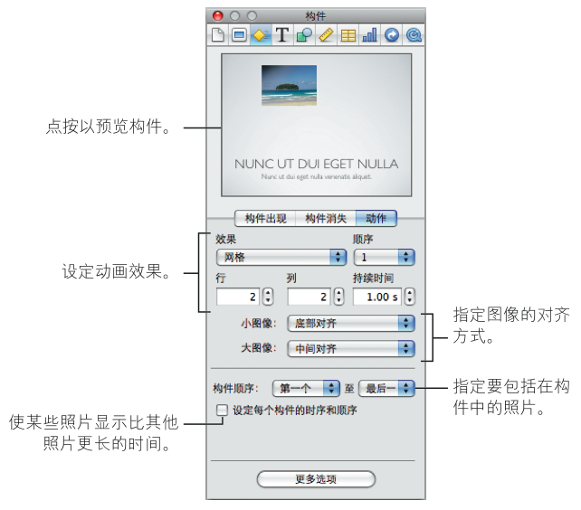
- 若要更改智能构件的速度，请在“持续时间”栏内设定一个值。持续时间越长意味着每个图像停留 在屏幕上的时间越长。
- 若要指定构件循环开始时图像和结束时你想要的图像，请在“构件位置从”和“构件结束位置”弹 出式菜单中选择它们的相应数字。
你可以循环浏览任何连续的图像子集或浏览所有图像，这取决于你选择的第一个和最后一个图像。
- 若要自定智能构件的其他属性，请使用控制以自定智能构件。
若要分开个别图像构件的定时：
- 在构件检查器的“动作”面板中，请选择标签为“设定每个构件的时序和顺序”的注记格。
- 如果构件抽屉尚未打开，请点按“更多选项”。
在该抽屉中，作为此智能构件一部分的所有图像将按照它们构建时的顺序被选择和出现。默认情况下，每个图像仅在你点按触发其构件后才会出现在幻灯片上。
- 若要使图像构件在设定的时间后自动开始构建（无需点按），请从抽屉底部的“开始构件”弹出式 菜单中选择“自动跟随在构件 n 后面”或“自动跟随在前一个构件后面”。
选定的构件会在上一个构件结束后立即自动开始。
- 若要在上一个构件与选定构件之间设定延迟，请在“延迟”栏内指定时间。
- 若要分散幻灯片上另一个对象的构件与此智能构件的图像构件，请将另一个对象构件拖移入图像构件之间你想要的位置。
有关分散对象构件的详细信息，请参阅混合文本、表格和图表的构件中的总体说明。
若要更改构件样式：
- 选择“智能构件”，然后从构件检查器的“动作”面板中的弹出式菜单中选取新效果。
若要显示智能构件编辑器：
- 在蓝色智能构件框中点按任意位置。
部分智能构件使用的效果也可以将图像移到或移出幻灯片。有关更多信息，请参阅使用构件将对象移到幻灯片上或移出幻灯片。
你可以在母版幻灯片上创建一个动作构件，这样构件效果就可以出现在使用该母版幻灯片创建的每张幻灯片上。
4.2.4 将对象构件重新排序
你可以更改幻灯片上构件的顺序。例如，你可以先将一个对象移到屏幕上，再将其移出屏幕，然后 才将另一个对象移到屏幕上。你还可以在不同时间制作对象（例如一系列项目符号中的其中一个项目符号）构件的不同部分。（有关使用对象部分的信息，请参阅混合文本、表格和图表的构件。）
以下是一些更改构件出现顺序的方法：
- 在构件检查器中，如果“构件顺序”抽屉尚未打开，请点按“更多选项”。在“构件顺序”抽屉中，请拖动项目以进行重新排序。
- 在幻灯片画布上选择一个对象，然后从构件检查器的“顺序”弹出式菜单中选取一个选项。
4.2.5 使对象构件自动化
默认情况下，你创建的任何对象构件均在点按时被激活。但通过自动启动对象构件，你可以创建更加有趣和更加复杂的动画。
若要指定启动构件的时间：
- 在工具栏中点按“检查器”，然后点按构件检查器按钮。
- 在构件检查器中，如果“构件顺序”抽屉尚未打开，请点按“更多选项”。
- 在“构件顺序”抽屉中，选择列表中的一个项目，然后从“开始构件”弹出式菜单中选取一个选项。
在点按时： 在点按时启动构件。
自动跟随在构件[编号]后面或自动跟随在前一个构件后面： 在上一个构件结束后，并且在“延迟”栏中指定的时间过后启动。
自动与构件[编号]同时开始： 在“延迟”栏中指定的时间后使两个构件同时出现。若要使两个构件同时出现，这两个构件在“构件顺序”列表中必须是相邻的。
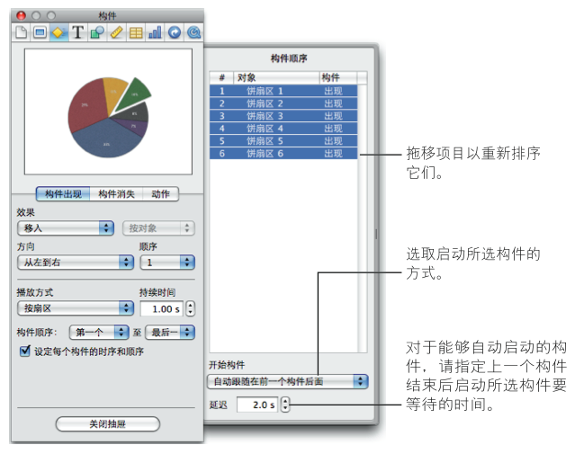
另外，你还可以将多个对象成组以将其变成一个对象。
- 如果你选择自动开始构件（而不是在点按时开始），则请通过在“延迟”栏中键入一个值（或点按箭头）指定上一个构件完成后需要等待的时间。
你可以指定长达60秒的延迟。
4.2.6 关于使带项目符号的文本、表格和图表产生动画效果
文本、表格、图表和影片具有对象特定的构件选项。例如，你可以创建一个图表构件，让其在幻灯片上一次显示一个条形图，也可以创建一个项目符号列表构件，让其在幻灯片上一次结束一个要点。
4.2.6.1 创建文本构件
你可以逐段落、逐词或逐字符构建文本。你可以给带项目符号的文本或纯正文文本创建文本构件。
若要设置文本构件：
- 在幻灯片画布上选择文本。
- 在工具栏中点按“检查器”，然后点按构件检查器按钮。
- 从构件检查器的“构件出现”（使文本出现）或“构件消失”（使文本消失）面板中的“播放方式”弹出式菜单中选取一个选项。你可能不会看见所有这些选项，这取决于你是否在幻灯片画布上选择了纯文本或带项目符号的文本：
- 一次全部： 同时移动文本框中的所有文本。
- 按项目符号： 按项目符号移动文本。
- 按项目符号成组： 将每个项目符号及其从属项目符号一起移动。
- 按高亮显示的项目符号： 在移动时高亮显示每个项目符号，仅保持最近的项目符号高亮显示。
- 按段落： 对于纯文本（不带项目符号）。
4.2.6.2 创建表格构件
你可以使表格在幻灯片上按逐行、逐列等方式出现或消失。
若要设置一个表格构件：
- 在幻灯片画布上选择一个表格。
- 在工具栏中点按“检查器”，然后点按构件检查器按钮。
- 从构件检查器的“构件出现”（使表格元素出现）或“构件消失”（使表格元素消失）面板中的“播放方式”弹出式菜单中选取一个选项。
- 一次全部： 将整个表格作为单个对象移动。
- 逐行： 将表格逐行移入屏幕。
- 逐列： 将表格逐列移入屏幕。
- 按单元格： 将表格按单元格逐个移入屏幕。
- 按行内容： 将整个空白表格移入屏幕，然后逐行插入内容。
- 按列内容： 将整个空白表格移入屏幕，然后逐列插入内容。
- 按单元格内容： 将整个空白表格移入屏幕，然后按单元格逐个添加内容。
- 由下至上： 将表格逐行由下至上移入屏幕。
- 由下至上 － 内容： 将整个空白表格移入屏幕，然后由下至上逐行添加内容。
表格的所有元素使用相同的构件样式。
4.2.6.3 创建图表构件
使图表按每次一条、每次一个扇区等方式出现或消失。
若要设置一个图表构件：
- 选择幻灯片画布上已定义了构件的图表。
- 在工具栏中点按“检查器”，然后点按构件检查器按钮。
- 从构件检查器的“构件出现”（使图表元素出现）或“构件消失”（使图表元素消失）下面的“播 放方式”弹出式菜单中选取一个选项。你可能不会看见所有这些选项，这取决于你在幻灯片画布上所选的图表类型：
- 一次全部： 将整个图表作为单个对象移动。
- 先背景： 将图表坐标轴移入屏幕，接着同时移入所有数据元素（条、线或区域形状）。
- 按序列： 将图表坐标轴移入屏幕，然后再移入数据元素，每次移入一个完整的序列。
- 按集合： 将图表坐标轴移入屏幕，然后再移入数据元素，每次移入一个完整的集合。
- 按序列中的元素： 将图表坐标轴移入屏幕，然后分别移入每个数据元素，每次移入一个序列。
- 按集合中的元素： 将图表坐标轴移入屏幕，然后分别移入每个数据元素，每次移入一个组。
图表的所有元素（除了图例）使用相同的构件样式。
你可以给图表图例分配自己的构件样式和顺序。若要使图例随图表出现，请先使它和图表成组，然后才再设定图表的构件样式。
4.2.6.4 混合文本、表格和图表的构件
在幻灯片上设置了对象构件之后，你可以设置“构件出现”和“构件消失”效果启动的标准。
例如，你可以建立一个构件，先引出幻灯片上的第一个文本项目符号，接着是饼图的第一个扇区，然后是第二个项目符号。你也可以通过同样的操作来将对象移出幻灯片。你也可以指定将用于构件中的元素的范围，例如，在文本构件中仅指定第二个和第三个文本项目符号。
若要混合对象构件：
- 在幻灯片画布上选择文本框、表格或图表。
- 在工具栏中点按“检查器”，然后点按构件检查器按钮。
- 通过从构件检查器的“构件出现”（使图表元素出现）或“构件消失”（使图表元素消失）下面的 “播放方式”弹出式菜单中选取除“一次全部”之外的一个选项，来设置对象构件。
- 若要指定要构建的元素的范围，请使用“构件位置从”和“构件结束位置”弹出式菜单。
- 选择“设定每个构件的时序和顺序”。
- 在幻灯片画布上选择另一个文本框、表格或图表，并按照步骤3至5所述设置其构件。
- 在“构件顺序”抽屉中，拖移构件以使它们按所需顺序排列。
如果构件抽屉尚未打开，请点按“更多选项”。你可能必须先取消选择“构件顺序”抽屉中的所有构件，然后才能选择一个构件并拖移。
若要了解有关给构件设定自动定时的信息，请参阅使对象构件自动化。
4.2.7 创建影片构件
如果你已经在幻灯片上放置了影片，则当幻灯片出现时影片随即开始播放（除非你指定幻灯片出现时不播放影片）。若要在影片开始播放和停止播放时能够控制影片，你必须创建影片构件。
若要设置影片构件：
- 在幻灯片画布上选择一个影片。
- 在工具栏中点按“检查器”，然后点按构件检查器按钮。
- 点按“构件出现”，然后从“效果”弹出式菜单中选取“开始播放影片”。
- 若要停止播放影片，请点按“构件消失”，然后从“效果”弹出式菜单中选取“停止播放影片”。
当构件出现时，影片开始播放和停止播放。和处理其他对象构件相同，你可以指定是否通过点按来 控制影片回放，或者指定你是否想要给影片回放设定自动定时，和其他构件形成序列。有关详细信 息，请参阅使对象构件自动化和将对象构件重新排序。
4.2.8 拷贝或删除对象构件
设置对象构件后，你可以轻松地拷贝它并将它粘贴到其他对象上，以便使两个对象能以相同的方式进行操作。或者你可以使用构件检查器来移除对象构件。
若要将对象构件从一个对象拷贝到另一个对象：
- 选择你已经在其上面设置了自己想要的构件的对象。
- 选取“格式”>“拷贝动画”。
- 选择第二个对象，然后选取“格式”>“粘贴动画”。
【注】你仅能在能够接受粘贴的对象类型上粘贴动画。例如，专用于文本的构件效果（如“弹力”）不能粘贴到图像上。
以下是删除对象构件的几种方法：
- 在构件检查器中，请点按“更多选项”以打开“构件顺序”抽屉。在“构件顺序”抽屉中，选择想 要删除的构件并按下 Delete 键。
- 选择你想要移除构件效果的项目，然后在构件检查器中的“效果”弹出式菜单中选取“无”。
5 在演示文稿中使用超链接
将超链接用作演示文稿内的导航元素，或者使用它们从演示文稿跳到Web。
5.1 关于超链接
超链接是一些导航元素，可以创建它们来帮助你在幻灯片显示文稿内移动，或者跳到网上的页面。超链接还可以触发某些操作，例如，打开预先指定的电子邮件信息或另一个Keynote演示文稿。
5.1.1 关于将对象制作成超链接
你可以将文本、图像和形状变成超链接，当你在演示期间点按这些链接时，它们会执行几个操作的任一操作。当你将对象制作成超链接时，会在幻灯片画布上使用曲线箭头徽章标记它；观看演示文稿时，该徽章不可见。但被制作成内联超链接的文本是加下划线的；观看演示文稿时，文本的下划线是可见的，除非你选取重新格式化文本，移除下划线。
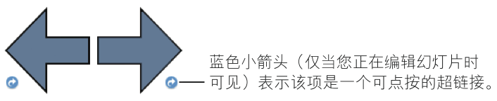
这些指向前进或后移的预绘制箭头是幻灯片显示中可用的导航元素的示例。各下角的曲线箭头小徽章都表示它已被制作成超链接。
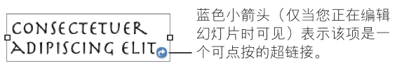
此文本框也已经被制作成超链接，如其右下角中相同的曲线箭头徽章表示。
使用超链接以在演示期间触发一下任一操作：
- 跳到特定的幻灯片。
- 在电脑的默认Web浏览器中打开网页。
- 打开另一个Keynote文稿。
- 打开电子邮件信息。
- 退出幻灯片显示。
5.2 在演示期间打开 Web 浏览器中的页面
你可以添加一个超链接，它可以在播放幻灯片显示的电脑上设置为默认浏览器的Web浏览器中打开网页。
若要添加可打开网页的超链接：
- 选择你想要变成超链接的文本或对象。
如果键入的文本以“www”或“http”开头（或从另一个文稿拷贝它），该文本会自动成为超链接。若要关闭此功能，请选取 Keynote > “偏好设置” ，点按 “自动改正” ，然后取消选择 “自动检测电子邮件和网址” 。此项设置是专用于电脑的设置，因此，如果在一台使用其他设置的电脑上打开该文稿，就会使用该电脑的设置。
- 在工具栏中点按“检查器”，点按超链接检查器按钮，然后选择“使成为超链接”。
- 从“链接至”弹出式菜单中选取“网页”。
- 在“URL”栏中键入网页的地址。
- 如果想要更改在文稿中显示为超链接的文本，请在“显示”栏中键入新文本。
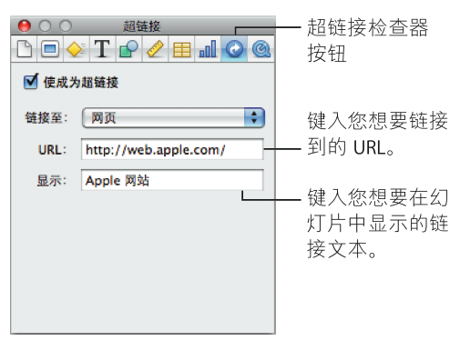
5.3 打开预先指定地址的电子邮件信息
超链接可以在播放幻灯片显示的电脑上设置的默认邮件应用程序中，打开预先指定地址的电子邮件信息。
若要添加链接到电子邮件信息的超链接：
- 选择你想要变成超链接的文本或对象。
如果你键入一个电子邮件地址（或从另一个文稿拷贝它），该文本会自动成为超链接。若要关闭此功能，请选取 Keynote >“偏好设置”，点按“自动改正”，然后取消选择“自动检测电子邮件和网址”。此设置是特定于电脑的，因此如果文稿在另一台具有不同设置的电脑上打开，则会改用那台电脑的设置。
- 在工具栏中点按“检查器”，点按超链接检查器按钮，然后选择“使成为超链接”。
- 从“链接至”弹出式菜单中选取“电子邮件信息”。
- 在“收件人”栏中键入指定收件人的电子邮件地址。
- 在“主题”栏中键入主题行（可选操作）。
- 若要显示超链接的自定文本，请在“显示”栏中键入新文本。（如果选取对象而不是文本作为超链接，此选项将变暗。）
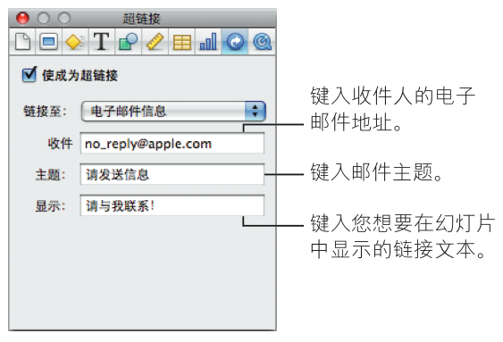
5.4 跳到特定幻灯片
如果你想要能够以非线性路径在演示文稿中移动，或者你如果想要查看者选取他们自己的路径来浏览你的演示文稿（例如，如果是在音乐台中演示幻灯片显示），你可以使用超链接跳到你的Keynote文稿中的任一幻灯片。
若要添加能够跳到特定幻灯片的超链接：
- 选择你想要变成超链接的文本或对象。
- 在工具栏中点按“检查器”，点按超链接检查器按钮，然后选择“使成为超链接”。
- 从“链接至”弹出式菜单中选取幻灯片。
- 选择描述要显示的幻灯片的选项（下一个、上一个、第一个、最后一个、最后一次查看的或幻灯片编号）。
5.5 在幻灯片显示中创建“停止幻灯片显示”按钮
如果你想要能够通过点按幻灯片显示中的按钮或文字来停止幻灯片显示，请创建一个能够停止幻灯片显示的超链接。
若要添加可停止幻灯片显示的超链接：
- 选择你想要用于触发停止幻灯片显示的对象或文字。
- 在工具栏中点按“检查器”，点按超链接检查器按钮，然后选择“使成为超链接”。
- 从“链接至”弹出式菜单中选取“退出幻灯片显示”。
5.6 在演示期间打开另一个Keynote幻灯片显示
添加可打开另一个Keynote文件的超链接。
若要添加可打开另一个Keynote文稿的超链接：
- 选择你想要变成超链接的文本或对象。
- 在工具栏中点按“检查器”，点按超链接检查器按钮，然后选择“使成为超链接”。
- 从“链接至”弹出式菜单中选取“Keynote幻灯片显示”。
- 浏览至文件并点按“打开”。
- 如果想要更改在文稿中显示为超链接的文本，请在“显示”栏中键入新文本。
点按连接到另一个 Keynote 文稿的链接时，新的幻灯片显示将从第一个幻灯片开始播放。
5.7 创建仅超链接演示文稿
如果你的幻灯片显示要在查看者将控制幻灯片回放的平台上显示，你可以通过创建能够链接至特定幻灯片、停止幻灯片显示以及触发其他操作的超链接，为你的查看者提供一些导航控制。
若要创建完全由超链接控制的幻灯片显示，你可以创建一个仅超链接演示文稿，其中，鼠标指针出现在带有超链接的幻灯片上。
默认情况下，在仅超链接演示期间，鼠标指针仅出现在带有超链接的幻灯片上。但是，你也可以设定偏好设置，以便当鼠标移动时，就出现鼠标指针。
若要制作一个仅包含超链接的演示：
- 将你的幻灯片显示设置为使用超链接导航至特定幻灯片。
有关更多信息，请参阅前面跳到特定幻灯片。
- 在文稿检查器的“文稿”面板中，从“演示文稿”弹出式菜单中选取“仅超链接”。
若要使鼠标指针在鼠标移动时出现：
- 选取Keynote > “偏好设置”，点按“幻灯片显示”，然后选择“当鼠标移动时显示指针”。
若要了解创建能够停止幻灯片显示的超链接的信息，请参阅在幻灯片显示中创建“停止幻灯片显示”按钮。如果你想要阻止未经授权的查看者停止幻灯片显示，你可以要求提供密码才能停止幻灯片显示。
5.8 给超链接文本加下划线
在默认情况下，超链接文本是带下划线的，但你也可以停用下划线。
以下是启用和停用下划线的几种方法：
- 若要阻止新的文字超链接被自动加下划线，请选取 Keynote > “偏好设置” ，点按 “自动改正” ，并取消选择 “创建时给超链接文字加下划线” 。
- 若要为现有的超链接文本移除下划线或添加下划线，请选择该文本并在格式栏中点按“U”按钮。带下划线的文本将丢失其下划线；纯文本将获得下划线。
- 若要为现有的超链接文本移除下划线或添加下划线，请选择该文本并在工具栏中点按“字体”，然后使用“字体”窗口中的选项。
6 一些总结
将演示文稿用于教学已是一线教学上的普遍情况，但实际中会产生许多不如人意的现象，比如，演示文稿容易造成主体角色的模糊；主宰课堂；在演示文稿的控制下，教师蜕变为“点击鼠标的人”和“朗读机器”，学生成为单纯接受信息的容器和“看客”……所以，我们要不断挖掘和发挥演示文稿的教学潜能，提升教师科学合理地制作和演示幻灯片的水平，从根本上变革我们的设计思维，把握教学过程，做好教学设计。
而做到这些更多地需要我们在实际中特别是一线教学实践中进行理论和实证研究的循环，不断地完善演示文稿设计与应用的水平，实现信息技术对提升教学质量的有效支持。
7 FAQ
- Keynote有Windows版本吗？
没有。Keynote是iWork工具软件套装中的一款软件（现在通过Mac App Store单独售卖），类似于Microsoft Office中的PowerPoint，只能运行在Mac OS X操作系统上。
- Keynote与Microsoft Office PowerPoint兼容吗？
虽然帮助文件上写着Keynote兼容PowerPoint文件，但仅仅只是兼容罢了，Office自家的不同版本之间还存在兼容性问题呢，所以不要奢求Keynote对Power Point会有多好的兼容性。当你尝试用Keynote打开一个Power Point文件的时候，Keynote并不能真正地打开它，它会创建一个新的转换文件，并留下原来的Power Point文件，但多数情况下转换后的文件会出现问题，比如丢失原来的字体、排版、动画效果等。
- 相比较PowerPoint，Keynote有哪些特点？
Keynote是苹果公司在一系列发布会主题演讲中使用的演示软件，与PowerPoint不同，Keynote支持几乎所有的图片字体，界面和设计也更图形化，借助Mac OS X内置的Quartz等图形技术，制作的幻灯片更容易多人眼球。另外，Keynote还有真三维转换，幻灯片在切换的时候有媲美电影动画的效果。
图片、表格、精简大气的文字，第一次使用Keynote，你就会充分体会到它的易用性。Keynote希望制作出的演示文稿尽可能的简洁，适合为演讲者所用；而PowerPoint布局就太多元化了，能添加的东西太多，适合为演示者所用。
想了解更多Keynote特性，请参考官方介绍。
- 用Keynote做的幻灯片如何在Windows平台上使用？
最好的方式是将其导出为mov文件，然后在Windows上面安装QuickTime，用QuickTime播放（支持幻灯片控制）。
- 如何使用Keynote进行演示？
你可以借助预演幻灯片显示功能，让演示的节奏更自然流畅。观众在主屏幕上欣赏你的演示的同时， 你可以在次屏幕上看到当前和下一张幻灯片、讲演者注释、以及时钟和计时器。即使你不能亲自到场，演示也能正常进行。你可以利用 Keynote 内置的旁白工具录制画外音，并设定好时间以配合幻灯片中的动画、以及幻灯片之间的过渡效果。
另外，你可以通过Keynote Remote软件，自在地在房间地任何角落进行演示，Keynote Remote通过Wi-Fi将iPod touch变成无线遥控器。在使用肖像模式显示时，你可以看到幻灯片和演讲者注释，手指轻点iPod touch即可开始播放，轻扫则可向前浏览幻灯片。
8 其他资源
8.1 在线视频教程
官方的在线教程提供了有关在Keynote中执行常见任务的入门视频。首次打开Keynote时，会出现一条消息，包含到这些网上教程的链接。你可以随时通过选取 “帮助” > “视频教程” 来观看Keynote视频教程。
8.2 屏幕帮助
屏幕帮助含有完成所有Keynote任务的详细说明。若要打开帮助，请打开Keynote并选取 “帮助” > “Keynote帮助” 。帮助的首页还提供有用网站的访问方式。
8.3 iWork公式与函数帮助
“iWork公式与函数帮助”含有在演示文稿中写入和使用公式与函数的完整介绍。从任何iWork应用程序的 “帮助” 菜单中，打开 “iWork公式与函数帮助” 。
9 参考资料
- Keynote指导手册
- 全新思维视域下的PowerPoint设计 钟志贤，张晓梅 中国电化教育，第291期，2011.4，p86-92
10 和我联系
如有问题，请先参考FAQ，或者发邮件到beitianmugeng[at]gmail.com，我会尽可能快得回复并更新问题列表。